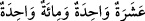

kadınlardır.
Bu nitelikler, zikredilenlerin hepsine icrâ edildiği takdirde onların “__WORD__” ile birbirine
atfedilmesi terkipteki fazilet ve üstünlüğe delâlet içindir. Fazilet sırası önce saf tutanlar
sonra toplayıp sürenler sonra da zikir okuyanlarındır. Yahut bunun tam aksidir. Yani
fazilet önce zikir okuyanlar, sonra toplayıp sürenler, sonra da saf tutanlarındır. Şayet bu
niteliklerin her biri belli bir gruba icra edilirse bu durumda “__WORD__” ile birbirlerine
atfedilmesi fazilet mertebelerinde bu niteliklerin sahiplerinin tertibine delâlet içindir.
Yani saf tutan gruplar fazilet sahibidirler. Toplayıp sürenler daha üstündürler. Zikir
okuyanlar ise üstünlük bakımından daha bariz ve parlaktırlar. Yahut fazilet sırası tam
aksi de olabilir. Şeyhin ve daha başkalarının tefsirinde buradaki “__WORD__” yapılan yeminin
bunların tamamına delâlet için olduğu şeklindedir.
Ey Mekke halkı, “yemin ederim ki, ilâhınız birdir.” O’nun ortağı yoktur. Öyleyse
putlardan, dünyadan hevâ ve hevesten ve şeytandan ilahlar edinmeyiniz. Doğrusu sizin
Rabbiniz kendi zâtında birdir. Zira âyet Mekke halkı hakkında nâzil olmuştur. Çünkü
onlar hayret ve şaşkınlık yoluyla “Tanrıları, tek tanrı mı yaptı? Doğrusu bu tuhaf bir
şeydir!” (es-Sa’d 38/5) diyorlardı. Bu cümle yeminin cevabıdır. Mü’min yeminsiz de
bunu ikrar etmekte; kâfir ise yeminle bile ikrar etmemektedir. Öyle de olsa burada
yeminin faydası, yemin edilen şeye tâzim ve onun şerefini izhar ve Arap kelamında
alışılmış olduğu üzere yemin edilen şeyi te’kid içindir. Zaten Kur’ân onların konuşma,
dil ve prensipleri üzere gönderilmiştir. Denilir ki burada ve benzerlerinde kelamın
takdiri “__WORD__ şeklindedir. Yani saf tutanların rabbine, incirin
rabbine ve zeytinin rabbine yemin olsun demektir.
Müfredât’ta der ki, vahdet infirat ve vahid yani teklik/tek/bir olmak demektir.
Gerçekte vahid asla cüz ve parçası olmayandır. Sonra var olan her şey için
kullanılmıştır. Öyle ki her sayının bir ile nitelenmesi mümkündür. Mesela, “__WORD__ yani bir tane on, bir tane yüz denilir. “__WORD__ kelimesi beş şekilde
kullanılabilen müştak bir lafızdır. Birincisi cins yahut çeşitte tek olandır. Mesela, “insan
ve at cins olarak, Zeyd ve Amr çeşit olarak birdir” sözleri gibi. İkincisi bitişik olması
bakımından bir olandır. Bu da ya hilkat ve yaratılış bakımından birdir; tek şahıs gibi
yahut sanat bakımından birdir; tek sanat, tek meslek gibi. Üçüncüsü bir benzeri olmadığı
için birdir; bu da ya yaratılış bakımından olur “güneş birdir” sözü gibi. Yahut fazilet/
üstünlük davasında olur; “falanca kişi asrının tek adamıdır” sözü gibi. Yine “onun ilim
ve benzerinde eşi yoktur” sözü gibi. Dördüncüsü toz gibi küçük olduğundan yahut elmas
gibi sert olduğundan dolayı bölünmesi mümkün olmayandır. Beşincisi başlangıç içindir.
Bu da ya bir sayı başlangıcı için olur; bir, iki gibi yahut bir hat başlangıcı için olur; bir
nokta gibi. Vahdet ve birlik bunların hepsinde ârızîdir. Allah Teâlâ bir olarak nitelendiği
zaman bunun mânâsı parçalanması ve çoğalması sahih ve mümkün olmayan demektir. Bu
vahdet ve birliğin zorluğundan dolayı Allah Teâlâ şöyle buyuruyor: “Allah, tek olarak
anıldığı zaman, ahirete inanmayanların içlerine sıkıntı basar. Ama Allah’tan